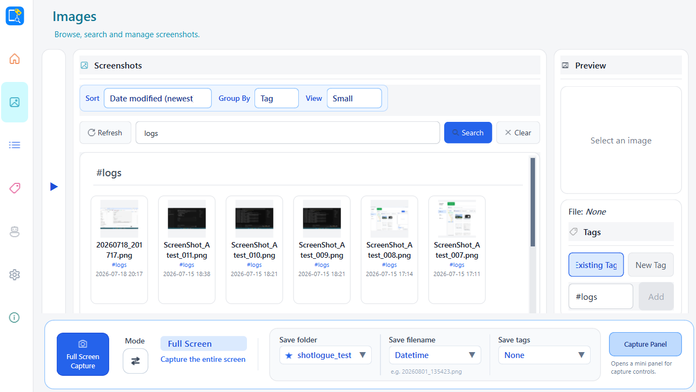

When screenshots disappear
- You remember the image, but not its filename.
- A useful reference vanishes into another crowded folder.
- You dig through files while a task or conversation waits.
- You give up, recapture it, or lose the idea completely.
Your screenshots, ready when you need them
Find the screenshot you need. Right now.
Stop digging through folders for an image you know you saved. Capixe gives every capture a searchable home, so you can recover the right information without breaking your flow.
Free preview · No account · Your images stay on your PC

The moment that matters
The problem is not storing another screenshot. It is recovering the information you already captured when you actually need it.
Bring screenshots into one searchable library. Use names, tags, folders, and visual browsing to get back to the right image without breaking your flow.
Local-first. No account required. Your files stay on your PC.
What you get
Every feature is designed to shorten the distance between “I saved that” and “here it is.”
Add simple tags now, then use the words you remember to find the image later.
Search by filename or tag and narrow a crowded library to the images that matter.
Keep screenshots in a Root Folder you choose instead of scattering them across your PC.
Group by tag or date so patterns and relevant sets become visible at a glance.
Your screenshots and metadata stay on your PC. No cloud account is required.
Save useful details while they are in front of you, knowing they will stay findable.
See it in action
See how Capixe gives every capture a visible, searchable home. Select any screen to view it at full size.
Coming later
Planned directions — not available in the current preview.
Start finding today
Try the free Windows preview. No account, subscription, or Python install required.
Prototype Preview
Version 0.1.0-preview
Unsigned Prototype Preview. Windows SmartScreen may show a warning — only continue if you trust this GitHub Release.
Questions
Common questions about privacy, pricing, and platform support.
Early preview
Capixe is currently in an early preview. I'm actively improving it based on user feedback.
I'd especially love feedback about: